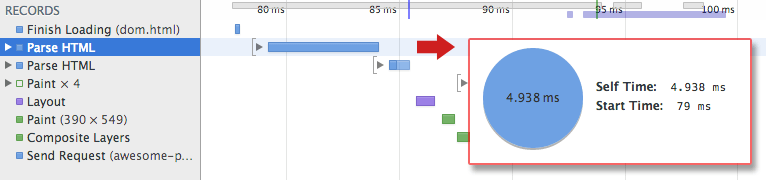

<!DOCTYPE html>


  


<html class="theme-next mist use-motion" lang="">
<head>
  <meta charset="UTF-8"/>
<meta http-equiv="X-UA-Compatible" content="IE=edge" />
<meta name="viewport" content="width=device-width, initial-scale=1, maximum-scale=1"/>
<meta name="theme-color" content="#222">


<meta http-equiv="Cache-Control" content="no-transform" />
<meta http-equiv="Cache-Control" content="no-siteapp" />


  
  
  <link href="/lib/fancybox/source/jquery.fancybox.css?v=2.1.5" rel="stylesheet" type="text/css" />


  
  
  
  

  
    
    
  

  

  

  

  

  
    
    
    <link href="//fonts.googleapis.com/css?family=Lato:300,300italic,400,400italic,700,700italic&subset=latin,latin-ext" rel="stylesheet" type="text/css">
  


<link href="/lib/font-awesome/css/font-awesome.min.css?v=4.6.2" rel="stylesheet" type="text/css" />

<link href="/css/main.css?v=5.1.2" rel="stylesheet" type="text/css" />


  <meta name="keywords" content="浏览器,渲染," />


  <link rel="shortcut icon" type="image/x-icon" href="/favicon.ico?v=5.1.2" />


<meta name="description" content="Introduction我们应该都很清楚浏览器的渲染过程如下：  具体步骤如下：  HTML -&amp;gt; DOM  CSS -&amp;gt; CSSOM  DOM + CSSOM -&amp;gt; Render Tree Layout Paint对于每个浏览器都会有一个浏览器引擎作为核心去执行这些步骤，火狐有Gecko，Chrome有基于Webkit的Blink。  接下来我们来一步步看上面的几个步骤 ">
<meta name="keywords" content="浏览器,渲染">
<meta property="og:type" content="article">
<meta property="og:title" content="浏览器渲染全过程以及常遇到的问题">
<meta property="og:url" content="https://superhos.github.io/2019/01/31/how-browser-rendering-works/index.html">
<meta property="og:site_name" content="Sevens Chan blog">
<meta property="og:description" content="Introduction我们应该都很清楚浏览器的渲染过程如下：  具体步骤如下：  HTML -&amp;gt; DOM  CSS -&amp;gt; CSSOM  DOM + CSSOM -&amp;gt; Render Tree Layout Paint对于每个浏览器都会有一个浏览器引擎作为核心去执行这些步骤，火狐有Gecko，Chrome有基于Webkit的Blink。  接下来我们来一步步看上面的几个步骤 ">
<meta property="og:locale" content="default">
<meta property="og:image" content="http://mateoclarke.com/public/images/browser-rendering.png">
<meta property="og:image" content="https://cdn-images-1.medium.com/max/1600/1*GSw1oqEpbPo0NmwG_73bPw.png">
<meta property="og:image" content="https://cdn-images-1.medium.com/max/1600/1*Ib2Ufggiy67xg02Jp8CYhQ.png">
<meta property="og:image" content="https://cdn-images-1.medium.com/max/1600/1*ROuUBS5eZ1DKk2RnFDfh6Q.png">
<meta property="og:image" content="https://superhos.github.io/2019/01/31/how-browser-rendering-works/full-process.png">
<meta property="og:image" content="https://superhos.github.io/2019/01/31/how-browser-rendering-works/dom-timeline.png">
<meta property="og:image" content="https://cdn-images-1.medium.com/max/1600/1*5GYEa442MdwmhPGJbGagGw.png">
<meta property="og:image" content="https://superhos.github.io/2019/01/31/how-browser-rendering-works/cssom-tree.png">
<meta property="og:image" content="https://superhos.github.io/2019/01/31/how-browser-rendering-works/cssom-timeline.png">
<meta property="og:image" content="https://cdn-images-1.medium.com/max/1600/1*10ytkQcfKdbfGQxvYj2-5A.png">
<meta property="og:image" content="https://superhos.github.io/2019/01/31/how-browser-rendering-works/render-tree-construction.png">
<meta property="og:image" content="https://superhos.github.io/2019/01/31/how-browser-rendering-works/layout-timeline.png">
<meta property="og:image" content="https://superhos.github.io/2019/01/31/how-browser-rendering-works/nytimes-nocss-device.png">
<meta property="og:image" content="https://superhos.github.io/2019/01/31/how-browser-rendering-works/wfL82.png">
<meta property="og:updated_time" content="2019-02-01T09:22:34.471Z">
<meta name="twitter:card" content="summary">
<meta name="twitter:title" content="浏览器渲染全过程以及常遇到的问题">
<meta name="twitter:description" content="Introduction我们应该都很清楚浏览器的渲染过程如下：  具体步骤如下：  HTML -&amp;gt; DOM  CSS -&amp;gt; CSSOM  DOM + CSSOM -&amp;gt; Render Tree Layout Paint对于每个浏览器都会有一个浏览器引擎作为核心去执行这些步骤，火狐有Gecko，Chrome有基于Webkit的Blink。  接下来我们来一步步看上面的几个步骤 ">
<meta name="twitter:image" content="http://mateoclarke.com/public/images/browser-rendering.png">


<script type="text/javascript" id="hexo.configurations">
  var NexT = window.NexT || {};
  var CONFIG = {
    root: '/',
    scheme: 'Mist',
    sidebar: {"position":"left","display":"post","offset":12,"offset_float":12,"b2t":false,"scrollpercent":false,"onmobile":false},
    fancybox: true,
    tabs: true,
    motion: true,
    duoshuo: {
      userId: '0',
      author: 'Author'
    },
    algolia: {
      applicationID: '',
      apiKey: '',
      indexName: '',
      hits: {"per_page":10},
      labels: {"input_placeholder":"Search for Posts","hits_empty":"We didn't find any results for the search: ${query}","hits_stats":"${hits} results found in ${time} ms"}
    }
  };
</script>


  <link rel="canonical" href="https://superhos.github.io/2019/01/31/how-browser-rendering-works/"/>


<link rel="stylesheet" href="https://imsun.github.io/gitment/style/default.css">
<script src="https://www.wenjunjiang.win/js/gitment.js"></script>


  <title>浏览器渲染全过程以及常遇到的问题 | Sevens Chan blog</title>
  


</head>

<body itemscope itemtype="http://schema.org/WebPage" lang="default">

  
  
    
  

  <div class="container sidebar-position-left page-post-detail ">
    <div class="headband"></div>

    <header id="header" class="header" itemscope itemtype="http://schema.org/WPHeader">
      <div class="header-inner"><div class="site-brand-wrapper">
  <div class="site-meta ">
    

    <div class="custom-logo-site-title">
      <a href="/"  class="brand" rel="start">
        <span class="logo-line-before"><i></i></span>
        <span class="site-title">Sevens Chan blog</span>
        <span class="logo-line-after"><i></i></span>
      </a>
    </div>
      
        <p class="site-subtitle">陈日天技术博客</p>
      
  </div>

  <div class="site-nav-toggle">
    <button>
      <span class="btn-bar"></span>
      <span class="btn-bar"></span>
      <span class="btn-bar"></span>
    </button>
  </div>
</div>

<nav class="site-nav">
  

  
    <ul id="menu" class="menu">
      
        
        <li class="menu-item menu-item-home">
          <a href="/" rel="section">
            
              <i class="menu-item-icon fa fa-fw fa-home"></i> <br />
            
            Home
          </a>
        </li>
      
        
        <li class="menu-item menu-item-archives">
          <a href="/archives/" rel="section">
            
              <i class="menu-item-icon fa fa-fw fa-archive"></i> <br />
            
            Archives
          </a>
        </li>
      
        
        <li class="menu-item menu-item-tags">
          <a href="/tags/" rel="section">
            
              <i class="menu-item-icon fa fa-fw fa-tags"></i> <br />
            
            Tags
          </a>
        </li>
      

      
    </ul>
  

  
</nav>


 </div>
    </header>

    <main id="main" class="main">
      <div class="main-inner">
        <div class="content-wrap">
          <div id="content" class="content">
            

  <div id="posts" class="posts-expand">
    

  

  
  
  

  <article class="post post-type-normal" itemscope itemtype="http://schema.org/Article">
  
  
  
  <div class="post-block">
    <link itemprop="mainEntityOfPage" href="https://superhos.github.io/2019/01/31/how-browser-rendering-works/">

    <span hidden itemprop="author" itemscope itemtype="http://schema.org/Person">
      <meta itemprop="name" content="SevensChan">
      <meta itemprop="description" content="">
      <meta itemprop="image" content="/images/avatar.gif">
    </span>

    <span hidden itemprop="publisher" itemscope itemtype="http://schema.org/Organization">
      <meta itemprop="name" content="Sevens Chan blog">
    </span>

    
      <header class="post-header">

        
        
          <h1 class="post-title" itemprop="name headline">浏览器渲染全过程以及常遇到的问题</h1>
        

        <div class="post-meta">
          <span class="post-time">
            
              <span class="post-meta-item-icon">
                <i class="fa fa-calendar-o"></i>
              </span>
              
                <span class="post-meta-item-text">Posted on</span>
              
              <time title="Post created" itemprop="dateCreated datePublished" datetime="2019-01-31T11:50:44+08:00">
                2019-01-31
              </time>
            

            

            
          </span>

          

          
            
          

          
          

          

          

          

        </div>
      </header>
    

    
    
    
    
    <div class="post-body" itemprop="articleBody">

      
      

      
        <h2 id="Introduction"><a href="#Introduction" class="headerlink" title="Introduction"></a>Introduction</h2><p>我们应该都很清楚浏览器的渲染过程如下：</p>
<p></p>
<p>具体步骤如下：</p>
<ol>
<li>HTML -&gt; DOM </li>
<li>CSS -&gt; CSSOM </li>
<li>DOM + CSSOM -&gt; Render Tree</li>
<li>Layout</li>
<li>Paint<br><br>对于每个浏览器都会有一个浏览器引擎作为核心去执行这些步骤，火狐有Gecko，Chrome有基于Webkit的Blink。</li>
</ol>
<p>接下来我们来一步步看上面的几个步骤</p>
<h2 id="发送和接收信息"><a href="#发送和接收信息" class="headerlink" title="发送和接收信息"></a>发送和接收信息</h2><p>数据是以“字节”为单位在网络中传输的。当我们在浏览器中打开HTML网页，浏览器是读取在我们硬盘中（或者网络中）HTML的原始字节。</p>
<p></p>
<p>划重点：浏览器读取的是数据的原始字节，而不是我们所写的代码。</p>
<p>浏览器接收数据的字节，但它无法真正做任何事情。<br><strong>必须将原始字节数据转换为它理解的形式。</strong><br>这是第一步。<br></p>
<h2 id="DOM-构成"><a href="#DOM-构成" class="headerlink" title="DOM 构成"></a>DOM 构成</h2><h3 id="将HTML的原始字节转为DOM"><a href="#将HTML的原始字节转为DOM" class="headerlink" title="将HTML的原始字节转为DOM"></a>将HTML的原始字节转为DOM</h3><p>浏览器对象需要的是文档对象模型(DOM)对象，那么DOM对象是怎么来的呢？</p>
<p>实际上由字节到DOM的过程如下：</p>
<p></p>
<p>假设现在我们有这么一个HTML文件：</p>
<figure class="highlight javascript"><table><tr><td class="gutter"><pre><span class="line">1</span><br><span class="line">2</span><br><span class="line">3</span><br><span class="line">4</span><br><span class="line">5</span><br><span class="line">6</span><br><span class="line">7</span><br><span class="line">8</span><br><span class="line">9</span><br><span class="line">10</span><br><span class="line">11</span><br><span class="line">12</span><br></pre></td><td class="code"><pre><span class="line">&lt;!DOCTYPE html&gt;</span><br><span class="line">&lt;html&gt;</span><br><span class="line">  &lt;head&gt;</span><br><span class="line">    &lt;meta name=<span class="string">"viewport"</span> content=<span class="string">"width=device-width,initial-scale=1"</span>&gt;</span><br><span class="line">    &lt;link href=<span class="string">"style.css"</span> rel=<span class="string">"stylesheet"</span>&gt;</span><br><span class="line">    &lt;title&gt;Critical Path&lt;<span class="regexp">/title&gt;</span></span><br><span class="line"><span class="regexp">  &lt;/</span>head&gt;</span><br><span class="line">  &lt;body&gt;</span><br><span class="line">    &lt;p&gt;Hello &lt;span&gt;web performance&lt;<span class="regexp">/span&gt; students!&lt;/</span>p&gt;</span><br><span class="line">    &lt;div&gt;<span class="xml"><span class="tag">&lt;<span class="name">img</span> <span class="attr">src</span>=<span class="string">"awesome-photo.jpg"</span>&gt;</span><span class="tag">&lt;/<span class="name">div</span>&gt;</span></span></span><br><span class="line">  &lt;<span class="regexp">/body&gt;</span></span><br><span class="line"><span class="regexp">&lt;/</span>html&gt;</span><br></pre></td></tr></table></figure>
<p>主要的流程如下：</p>
<p></p>
<ol>
<li><strong>转换：</strong> 浏览器从硬盘或者网络读取到HTML的原始字节数据之后，就会把它根据文档中指定的编码把它转换成对应字符（例如，UTF-8）</li>
<li><strong>权杖化：</strong> 浏览器会根据<a href="https://www.w3.org/TR/html5/" target="_blank" rel="noopener">W3C HTML5标准</a>把字符串转换为不同的令牌(tokens)。例如<code>&lt;html&gt;</code>，<code>&lt;body&gt;</code>和其他被尖括号包含的字符串。每个令牌都有特殊的含义和属于它自己的一套规则。</li>
<li><strong>词法分析：</strong> 发出的令牌转换成定义其属性和规则的“对象”</li>
<li><strong>DOM构建：</strong> 最后，因为HTML的标记定义了不同标签之间的关系（一些标签会被包含在其他的标签中），创建的对象链接在一个树数据结构内，此结构也会捕获原始标记中定义的父子关系：HTML 对象是 body 对象的父项，body 是 paragraph 对象的父项，依此类推。</li>
</ol>
<p>整个流程的最终输出是我们这个HTML页面的文档对象模型 (DOM)，浏览器对页面进行的所有进一步处理都会用到它。</p>
<p>根据<code>html</code>文件的大小和复杂程度，DOM的构建过程会花费一点时间。无论多少的文件，都会花费响应的时间。具体消耗时间可以看chrome dev tool中看到。<br></p>
<p>如果您打开 Chrome DevTools 并在页面加载时记录时间线，就可以看到执行该步骤实际花费的时间。在上例中，将一堆 HTML 字节转换成 DOM 树大约需要 5 毫秒。对于较大的页面，这一过程需要的时间可能会显著增加。创建流畅动画时，如果浏览器需要处理大量 HTML，这很容易成为瓶颈。</p>
<h2 id="那么，CSSOM呢？"><a href="#那么，CSSOM呢？" class="headerlink" title="那么，CSSOM呢？"></a>那么，CSSOM呢？</h2><p><code>html</code>文件的CSS链接方式如下所示：<br><figure class="highlight html"><table><tr><td class="gutter"><pre><span class="line">1</span><br><span class="line">2</span><br><span class="line">3</span><br><span class="line">4</span><br><span class="line">5</span><br><span class="line">6</span><br><span class="line">7</span><br><span class="line">8</span><br><span class="line">9</span><br></pre></td><td class="code"><pre><span class="line"><span class="meta">&lt;!DOCTYPE html&gt;</span></span><br><span class="line"><span class="tag">&lt;<span class="name">html</span>&gt;</span></span><br><span class="line"><span class="tag">&lt;<span class="name">head</span>&gt;</span></span><br><span class="line">    <span class="tag">&lt;<span class="name">link</span> <span class="attr">rel</span>=<span class="string">"stylesheet"</span> <span class="attr">type</span>=<span class="string">"text/css"</span> <span class="attr">media</span>=<span class="string">"screen"</span> <span class="attr">href</span>=<span class="string">"main.css"</span> /&gt;</span></span><br><span class="line"><span class="tag">&lt;/<span class="name">head</span>&gt;</span></span><br><span class="line"><span class="tag">&lt;<span class="name">body</span>&gt;</span></span><br><span class="line">    </span><br><span class="line"><span class="tag">&lt;/<span class="name">body</span>&gt;</span></span><br><span class="line"><span class="tag">&lt;/<span class="name">html</span>&gt;</span></span><br></pre></td></tr></table></figure></p>
<p>当浏览器接收数据原始字节并构建DOM的时候，遇到link标记，标记引用了外部的CSS样式表，那么它就<strong>立即</strong>会发出请求来获取链接的main.css样式表。<br>一旦浏览器开始解析html，在找到css文件的链接标记后，它就会发出获取该请求的请求。之后同样的，会先获取文件的数据原始字节。</p>
<h3 id="由CSS原始字节到CSSOM"><a href="#由CSS原始字节到CSSOM" class="headerlink" title="由CSS原始字节到CSSOM"></a>由CSS原始字节到CSSOM</h3><p>大致步骤跟DOM相当的类似，同样会经过Characters -&gt; Tokens -&gt; Node 的步骤。<br>同样会用树的结构来把Nodes构建成一棵树，称为CSS Object Model，CSSOM。</p>
<p></p>
<p>CSS还有一样东西叫<a href="https://blog.logrocket.com/how-css-works-understanding-the-cascade-d181cd89a4d8" target="_blank" rel="noopener">Cascade</a>。这个Cascade是浏览器确定元素使用什么样式的方式。</p>
<p>由于元素样式可能会受到它的父元素影响。例如继承或者在元素本身上去设置，因此CSSOM的树结构就更显得重要。</p>
<p>为什么？</p>
<p></p>
<p>因为浏览器必须递归遍历CSS树结构并且决定影响特定元素的样式。<br>以上面的 CSSOM 树为例进行更具体的阐述。span 标记内包含的任何置于 body 元素内的文本都将具有 16 像素字号，并且颜色为红色 — font-size 指令从 body 向下级联至 span。不过，如果某个 span 标记是某个段落 (p) 标记的子项，则其内容将不会显示。</p>
<p>CSSOM构建消耗的时间如下：<br></p>
<p>好的，那么现在我们有DOM和CSSOM了，可以开始渲染了。</p>
<h2 id="The-render-tree-渲染树-构建、Layout-布局-和绘制"><a href="#The-render-tree-渲染树-构建、Layout-布局-和绘制" class="headerlink" title="The render tree (渲染树)构建、Layout(布局)和绘制"></a>The render tree (渲染树)构建、Layout(布局)和绘制</h2><p>有了DOM和CSSOM，如何将两者合并，让浏览器在屏幕上渲染像素呢？</p>
<p>渲染步骤如下：</p>
<ul>
<li>DOM和CSSOM合并后形成Render Tree.</li>
<li>渲染树只包含渲染网页所需要的点</li>
<li>布局计算每个对象的精确位置和大小</li>
</ul>
<h3 id="渲染树构建"><a href="#渲染树构建" class="headerlink" title="渲染树构建"></a>渲染树构建</h3><p>怎么能够把两个看起来没有共同目标的独立树结构结合在一起呢？<br>DOM和CSSM两棵树有着两个独立的结构。<br>DOM包含所有页面中的HTML元素的关系，而CSSOM包含的是如何设置元素样式的信息。<br>然后浏览器需要做的是把它们两棵树合并到一棵中，称为渲染树.<br></p>
<p>渲染树包含页面中所有可视的DOM内容信息，以及不同节点所需要的CSSOM信息。</p>
<p><br>为构建渲染树，浏览器大体上完成了下列工作：</p>
<ol>
<li>从 DOM 树的根节点开始遍历每个可见节点。<ul>
<li>某些节点不可见（例如脚本标记、元标记等），因为它们不会体现在渲染输出中，所以会被忽略。</li>
<li>某些节点通过 CSS 隐藏，因此在渲染树中也会被忽略，例如，上例中的 span 节点—不会出现在渲染树中，—因为有一个显式规则在该节点上设置了<code>display: none</code>属性。</li>
</ul>
</li>
<li>对于每个可见节点，为其找到适配的 CSSOM 规则并应用它们。</li>
<li>发射可见节点，连同其内容和计算的样式。</li>
</ol>
<blockquote>
<p>Note: 简单提一句，请注意 visibility: hidden 与 display: none 是不一样的。前者隐藏元素，但元素仍占据着布局空间（即将其渲染成一个空框），而后者 (display: none) 将元素从渲染树中完全移除，元素既不可见，也不是布局的组成部分。</p>
</blockquote>
<p>等渲染树构建完毕，浏览器就会进入下一个步骤！Layout(布局)</p>
<h3 id="布局-reflow"><a href="#布局-reflow" class="headerlink" title="布局(reflow)"></a>布局(reflow)</h3><p>布局阶段，也被称为<strong>reflow</strong>阶段，其实我们可以把浏览器页面展示本身想成是一个canvas，我们展示指定组件到指定位置就要计算出它的实际位置很大小，同样的概念放在浏览器布局阶段同样合适。</p>
<p>考虑一下下面一个实例：<br><figure class="highlight html"><table><tr><td class="gutter"><pre><span class="line">1</span><br><span class="line">2</span><br><span class="line">3</span><br><span class="line">4</span><br><span class="line">5</span><br><span class="line">6</span><br><span class="line">7</span><br><span class="line">8</span><br><span class="line">9</span><br><span class="line">10</span><br><span class="line">11</span><br><span class="line">12</span><br></pre></td><td class="code"><pre><span class="line"><span class="meta">&lt;!DOCTYPE html&gt;</span></span><br><span class="line"><span class="tag">&lt;<span class="name">html</span>&gt;</span></span><br><span class="line">  <span class="tag">&lt;<span class="name">head</span>&gt;</span></span><br><span class="line">    <span class="tag">&lt;<span class="name">meta</span> <span class="attr">name</span>=<span class="string">"viewport"</span> <span class="attr">content</span>=<span class="string">"width=device-width,initial-scale=1"</span>&gt;</span></span><br><span class="line">    <span class="tag">&lt;<span class="name">title</span>&gt;</span>Critial Path: Hello world!<span class="tag">&lt;/<span class="name">title</span>&gt;</span></span><br><span class="line">  <span class="tag">&lt;/<span class="name">head</span>&gt;</span></span><br><span class="line">  <span class="tag">&lt;<span class="name">body</span>&gt;</span></span><br><span class="line">    <span class="tag">&lt;<span class="name">div</span> <span class="attr">style</span>=<span class="string">"width: 50%"</span>&gt;</span></span><br><span class="line">      <span class="tag">&lt;<span class="name">div</span> <span class="attr">style</span>=<span class="string">"width: 50%"</span>&gt;</span>Hello world!<span class="tag">&lt;/<span class="name">div</span>&gt;</span></span><br><span class="line">    <span class="tag">&lt;/<span class="name">div</span>&gt;</span></span><br><span class="line">  <span class="tag">&lt;/<span class="name">body</span>&gt;</span></span><br><span class="line"><span class="tag">&lt;/<span class="name">html</span>&gt;</span></span><br></pre></td></tr></table></figure></p>
<p>包含了两个嵌套的div，第一个div的显示宽度设为了视窗宽度的50%，第二个div把宽度设置成了父div的50%，也就是视窗宽度的25%。</p>
<p>布局流程的输出是一个“盒模型”，它会精确地捕获每个元素在视口内的确切位置和尺寸：所有相对测量值都转换为屏幕上的绝对像素。</p>
<p>到这里，我们已经知道了那些节点可见，它们的样式以及几何信息，就可以进行左右一步：把渲染树的每个节点转换成屏幕上的实际像素。</p>
<p>Layout消耗的时间可以在这里查看：<br></p>
<ul>
<li>“Layout”事件在时间线中捕获渲染树构建以及位置和尺寸计算。</li>
<li>布局完成后，浏览器会立即发出“Paint Setup”和“Paint”事件，将渲染树转换成屏幕上的像素。</li>
</ul>
<h3 id="绘制-repaint"><a href="#绘制-repaint" class="headerlink" title="绘制(repaint)"></a>绘制(repaint)</h3><p>最后一步，根据上面计算到的信息绘制像素点。</p>
<h2 id="阻塞渲染"><a href="#阻塞渲染" class="headerlink" title="阻塞渲染"></a>阻塞渲染</h2><p></p>
<p>如上图所示，如果CSSOM未准备就绪前就进行Render Tree构建和布局渲染的话，得到的上图结果其实是毫无意义的（太丑）。因此CSSOM构建的时候会进行<strong>阻塞渲染</strong>，意思就是CSSOM未构建完毕前，才能构建渲染树。（当然如果DOM未构建完也会有同样问题，所以DOM也会阻塞渲染）</p>
<p>因此，我们必须尽量精简我们的CSS，或者使用medio属性设置阻塞的条件：<br><figure class="highlight javascript"><table><tr><td class="gutter"><pre><span class="line">1</span><br><span class="line">2</span><br><span class="line">3</span><br></pre></td><td class="code"><pre><span class="line">&lt;link href=<span class="string">"style.css"</span> rel=<span class="string">"stylesheet"</span>&gt;</span><br><span class="line">&lt;link href=<span class="string">"print.css"</span> rel=<span class="string">"stylesheet"</span> media=<span class="string">"print"</span>&gt;</span><br><span class="line">&lt;link href=<span class="string">"other.css"</span> rel=<span class="string">"stylesheet"</span> media=<span class="string">"(min-width: 40em)"</span>&gt;</span><br></pre></td></tr></table></figure></p>
<p>第一个连接样式没有生命media，说明会始终阻塞渲染。<br>第二条设置了<code>print</code>，就是说在打印内容的时候才会阻塞渲染。<br>第三条则设置了<code>(min-width: 40em)</code>，只有在宽度大于40em的时候才会阻塞渲染。</p>
<h2 id="为什么要把JS放在最后"><a href="#为什么要把JS放在最后" class="headerlink" title="为什么要把JS放在最后"></a>为什么要把JS放在最后</h2><h3 id="为什么会使渲染延迟"><a href="#为什么会使渲染延迟" class="headerlink" title="为什么会使渲染延迟"></a>为什么会使渲染延迟</h3><p>DOM构建并不是一口气完成的，当 HTML 解析器遇到一个 script 标记时，它会暂停构建 DOM，将控制权移交给 JavaScript 引擎；等 JavaScript 引擎运行完毕，浏览器会从中断的地方恢复 DOM 构建。也就是说：<strong>执行我们的内联脚本会阻止 DOM 构建，也就延缓了首次渲染。</strong></p>
<p>同样，如果浏览器尚未完成 CSSOM 的下载和构建，而我们却想在此时运行脚本，会怎样？答案很简单，对性能不利：<strong>浏览器将延迟脚本执行和 DOM 构建，直至其完成 CSSOM 的下载和构建。</strong></p>
<p>因此，Javascript在DOM,CSSOM执行之间引入了大量新的依赖关系，会引起浏览器的处理因而在渲染时候出现大幅的延迟：</p>
<ul>
<li>脚本在文档中的位置很重要。</li>
<li>当浏览器遇到一个 script 标记时，DOM 构建将暂停，直至脚本完成执行。</li>
<li>JavaScript 可以查询和修改 DOM 与 CSSOM。</li>
<li>JavaScript 执行将暂停，直至 CSSOM 就绪。</li>
</ul>
<h3 id="如果是外链JS呢？"><a href="#如果是外链JS呢？" class="headerlink" title="如果是外链JS呢？"></a>如果是外链JS呢？</h3><p>结果其实跟内联Javascript一样，构建都会停下来先执行JS，然后再继续构建。<strong>如果是外部 JavaScript 文件，浏览器必须停下来，等待从磁盘、缓存或远程服务器获取脚本，这就可能给关键渲染路径增加数十至数千毫秒的延迟。</strong></p>
<h3 id="defer和async属性"><a href="#defer和async属性" class="headerlink" title="defer和async属性"></a>defer和async属性</h3><p>针对上面的问题，浏览器也提供了<code>defer</code>和<code>async</code>属性来减少这类问题，<br><figure class="highlight javascript"><table><tr><td class="gutter"><pre><span class="line">1</span><br><span class="line">2</span><br><span class="line">3</span><br><span class="line">4</span><br></pre></td><td class="code"><pre><span class="line">&lt;script src=<span class="string">"app.js"</span> defer&gt;<span class="xml"><span class="tag">&lt;/<span class="name">script</span>&gt;</span></span></span><br><span class="line">&lt;script src=<span class="string">"app.js"</span> <span class="keyword">async</span>&gt;<span class="xml"><span class="tag">&lt;/<span class="name">script</span>&gt;</span></span></span><br><span class="line"></span><br><span class="line">那么它们之间的区别是？</span><br></pre></td></tr></table></figure></p>
<p></p>
<ul>
<li>如上图所示，正常的script标签定义的JS，会在主线程中下载完以后马上执行，从而堵塞后面的DOM和CSSOM构建。</li>
<li>加了async属性之后，该script就会并行下载JS文件，并且在下载完后马上执行，执行的时候同样会堵塞后面的DOM和CSSOM构建。而且，使用了async之后，<strong>无法确定脚本的执行顺序！！</strong></li>
<li>defer的话script也会并行下载JS文件，但是下载完后并不会马上执行，会等到DOM和CSSOM构建完成后再执行。</li>
</ul>
<h3 id="那么用defer还是把script放在body底部呢"><a href="#那么用defer还是把script放在body底部呢" class="headerlink" title="那么用defer还是把script放在body底部呢"></a>那么用defer还是把script放在body底部呢</h3><p>参考文章[3]中Chris给出的一个结论：我们不能相信defer。<br>理由很简单，不同浏览器标准在打架。不同浏览器对defer实现的标准都存在差异而引起的问题：<br>1.在某些情况下，某些浏览器会出现导致延迟脚本无序运行的错误。<br>2.有些浏览器延迟了DOMContentLoaded事件，直到加载了延迟脚本，有些浏览器没有。<br>3.有些浏览器遵循使用内联代码并且没有src属性的<code>&lt;script&gt;</code>元素的延迟，有些浏览器会忽略它。<br>当然了，这个已经是12年的回答，近6年的发展也许浏览器的标准都已经统一好了也说不准（喜欢特立独行的IE已经离开了我们），有空的话可以做一次实验。</p>
<p>而Google的开发Guide里面已经建议使用异步加载属性了，至少Chrome中使用是没问题的了。</p>
<p>在此之前，把script放在body底部还是最稳妥的方法。</p>
<h2 id="关于CSS的优化"><a href="#关于CSS的优化" class="headerlink" title="关于CSS的优化"></a>关于CSS的优化</h2><p>CSS 是构建渲染树的必备元素，首次构建网页时，JavaScript 常常受阻于 CSS。确保将任何非必需的 CSS 都标记为非关键资源（例如打印和其他媒体查询），并应确保尽可能减少关键 CSS 的数量，以及尽可能缩短传送时间。</p>
<p><strong>此处只列举简单的几种CSS优化方式，会另开一篇文章更详细记录</strong></p>
<h3 id="将-CSS-置于文档-head-标签内"><a href="#将-CSS-置于文档-head-标签内" class="headerlink" title="将 CSS 置于文档 head 标签内"></a>将 CSS 置于文档 head 标签内</h3><p>尽早在 HTML 文档内指定所有 CSS 资源，以便浏览器尽早发现 <link> 标记并尽早发出 CSS 请求。</p>
<h3 id="避免使用-CSS-import"><a href="#避免使用-CSS-import" class="headerlink" title="避免使用 CSS import"></a>避免使用 CSS import</h3><p>一个样式表可以使用 CSS import (@import) 指令从另一样式表文件导入规则。不过，应避免使用这些指令，因为它们会在关键路径中增加往返次数：只有在收到并解析完带有 @import 规则的 CSS 样式表之后，才会发现导入的 CSS 资源。</p>
<h3 id="内联阻塞渲染的-CSS"><a href="#内联阻塞渲染的-CSS" class="headerlink" title="内联阻塞渲染的 CSS"></a>内联阻塞渲染的 CSS</h3><p>为获得最佳性能，您可能会考虑将关键 CSS 直接内联到 HTML 文档内。这样做不会增加关键路径中的往返次数，并且如果实现得当，在只有 HTML 是阻塞渲染的资源时，可实现“一次往返”关键路径长度。</p>
<h2 id="总结"><a href="#总结" class="headerlink" title="总结"></a>总结</h2><p>这篇文章主要讲述了浏览器的渲染步骤，以及一些常见的渲染相关问题，优化等。</p>
<h2 id="参考文章"><a href="#参考文章" class="headerlink" title="参考文章"></a>参考文章</h2><ol>
<li><a href="https://blog.logrocket.com/how-browser-rendering-works-behind-the-scenes-6782b0e8fb10?gi=6d8028a5d1d2" target="_blank" rel="noopener">How browser rendering works — behind the scenes</a></li>
<li><a href="https://developers.google.com/web/fundamentals/performance/critical-rendering-path/constructing-the-object-model" target="_blank" rel="noopener">Constructing the Object Model</a></li>
<li><a href="https://stackoverflow.com/questions/5250412/how-exactly-does-script-defer-defer-work/10731231#10731231" target="_blank" rel="noopener">Why don’t use defer</a></li>
</ol>

      
    </div>
    
    
    
    

    

    

    

    <footer class="post-footer">
      
        <div class="post-tags">
          
            <a href="/tags/浏览器-渲染/" rel="tag"># 浏览器,渲染</a>
          
        </div>
      

      
      
      

      
        <div class="post-nav">
          <div class="post-nav-next post-nav-item">
            
              <a href="/2019/01/29/tools-markdown/" rel="next" title="实用Library记录">
                <i class="fa fa-chevron-left"></i> 实用Library记录
              </a>
            
          </div>

          <span class="post-nav-divider"></span>

          <div class="post-nav-prev post-nav-item">
            
              <a href="/2019/02/21/why-shouldnt-jsonp-be-used/" rel="prev" title="为什么不建议使用jsonp">
                为什么不建议使用jsonp <i class="fa fa-chevron-right"></i>
              </a>
            
          </div>
        </div>
      

      
      
    </footer>
  </div>
  
  
  
  </article>


    <div class="post-spread">
      
    </div>
  </div>


          </div>
          


          
  <div class="comments" id="comments">
    <div id="gitment-comments"></div> 
  </div>


    


<script>
const gitment = new Gitment({
    id: "浏览器渲染全过程以及常遇到的问题",
    owner: 'superhos',
    repo: 'superhos.github.io',
    oauth: {
        client_id: "955a1a460b0c407643cf",
        client_secret: "2a328b1118b9fdd8a9b773214b8324b94cf3cb1a"
    }
});
gitment.render(document.getElementById('gitment-comments'));
</script>
        </div>
        
          
  
  <div class="sidebar-toggle">
    <div class="sidebar-toggle-line-wrap">
      <span class="sidebar-toggle-line sidebar-toggle-line-first"></span>
      <span class="sidebar-toggle-line sidebar-toggle-line-middle"></span>
      <span class="sidebar-toggle-line sidebar-toggle-line-last"></span>
    </div>
  </div>

  <aside id="sidebar" class="sidebar">
    
    <div class="sidebar-inner">

      

      
        <ul class="sidebar-nav motion-element">
          <li class="sidebar-nav-toc sidebar-nav-active" data-target="post-toc-wrap" >
            Table of Contents
          </li>
          <li class="sidebar-nav-overview" data-target="site-overview">
            Overview
          </li>
        </ul>
      

      <section class="site-overview sidebar-panel">
        <div class="site-author motion-element" itemprop="author" itemscope itemtype="http://schema.org/Person">
          
          <p class="site-author-name" itemprop="name">SevensChan</p>
           
              <p class="site-description motion-element" itemprop="description"></p>
          
        </div>
        <nav class="site-state motion-element">

          
            <div class="site-state-item site-state-posts">
              <a href="/archives/">
                <span class="site-state-item-count">76</span>
                <span class="site-state-item-name">posts</span>
              </a>
            </div>
          

          

          
            
            
            <div class="site-state-item site-state-tags">
              <a href="/tags/index.html">
                <span class="site-state-item-count">7</span>
                <span class="site-state-item-name">tags</span>
              </a>
            </div>
          

        </nav>

        

        <div class="links-of-author motion-element">
          
        </div>

        
        

        
        

        


      </section>

      
      <!--noindex-->
        <section class="post-toc-wrap motion-element sidebar-panel sidebar-panel-active">
          <div class="post-toc">

            
              
            

            
              <div class="post-toc-content"><ol class="nav"><li class="nav-item nav-level-2"><a class="nav-link" href="#Introduction"><span class="nav-number">1.</span> <span class="nav-text">Introduction</span></a></li><li class="nav-item nav-level-2"><a class="nav-link" href="#发送和接收信息"><span class="nav-number">2.</span> <span class="nav-text">发送和接收信息</span></a></li><li class="nav-item nav-level-2"><a class="nav-link" href="#DOM-构成"><span class="nav-number">3.</span> <span class="nav-text">DOM 构成</span></a><ol class="nav-child"><li class="nav-item nav-level-3"><a class="nav-link" href="#将HTML的原始字节转为DOM"><span class="nav-number">3.1.</span> <span class="nav-text">将HTML的原始字节转为DOM</span></a></li></ol></li><li class="nav-item nav-level-2"><a class="nav-link" href="#那么，CSSOM呢？"><span class="nav-number">4.</span> <span class="nav-text">那么，CSSOM呢？</span></a><ol class="nav-child"><li class="nav-item nav-level-3"><a class="nav-link" href="#由CSS原始字节到CSSOM"><span class="nav-number">4.1.</span> <span class="nav-text">由CSS原始字节到CSSOM</span></a></li></ol></li><li class="nav-item nav-level-2"><a class="nav-link" href="#The-render-tree-渲染树-构建、Layout-布局-和绘制"><span class="nav-number">5.</span> <span class="nav-text">The render tree (渲染树)构建、Layout(布局)和绘制</span></a><ol class="nav-child"><li class="nav-item nav-level-3"><a class="nav-link" href="#渲染树构建"><span class="nav-number">5.1.</span> <span class="nav-text">渲染树构建</span></a></li><li class="nav-item nav-level-3"><a class="nav-link" href="#布局-reflow"><span class="nav-number">5.2.</span> <span class="nav-text">布局(reflow)</span></a></li><li class="nav-item nav-level-3"><a class="nav-link" href="#绘制-repaint"><span class="nav-number">5.3.</span> <span class="nav-text">绘制(repaint)</span></a></li></ol></li><li class="nav-item nav-level-2"><a class="nav-link" href="#阻塞渲染"><span class="nav-number">6.</span> <span class="nav-text">阻塞渲染</span></a></li><li class="nav-item nav-level-2"><a class="nav-link" href="#为什么要把JS放在最后"><span class="nav-number">7.</span> <span class="nav-text">为什么要把JS放在最后</span></a><ol class="nav-child"><li class="nav-item nav-level-3"><a class="nav-link" href="#为什么会使渲染延迟"><span class="nav-number">7.1.</span> <span class="nav-text">为什么会使渲染延迟</span></a></li><li class="nav-item nav-level-3"><a class="nav-link" href="#如果是外链JS呢？"><span class="nav-number">7.2.</span> <span class="nav-text">如果是外链JS呢？</span></a></li><li class="nav-item nav-level-3"><a class="nav-link" href="#defer和async属性"><span class="nav-number">7.3.</span> <span class="nav-text">defer和async属性</span></a></li><li class="nav-item nav-level-3"><a class="nav-link" href="#那么用defer还是把script放在body底部呢"><span class="nav-number">7.4.</span> <span class="nav-text">那么用defer还是把script放在body底部呢</span></a></li></ol></li><li class="nav-item nav-level-2"><a class="nav-link" href="#关于CSS的优化"><span class="nav-number">8.</span> <span class="nav-text">关于CSS的优化</span></a><ol class="nav-child"><li class="nav-item nav-level-3"><a class="nav-link" href="#将-CSS-置于文档-head-标签内"><span class="nav-number">8.1.</span> <span class="nav-text">将 CSS 置于文档 head 标签内</span></a></li><li class="nav-item nav-level-3"><a class="nav-link" href="#避免使用-CSS-import"><span class="nav-number">8.2.</span> <span class="nav-text">避免使用 CSS import</span></a></li><li class="nav-item nav-level-3"><a class="nav-link" href="#内联阻塞渲染的-CSS"><span class="nav-number">8.3.</span> <span class="nav-text">内联阻塞渲染的 CSS</span></a></li></ol></li><li class="nav-item nav-level-2"><a class="nav-link" href="#总结"><span class="nav-number">9.</span> <span class="nav-text">总结</span></a></li><li class="nav-item nav-level-2"><a class="nav-link" href="#参考文章"><span class="nav-number">10.</span> <span class="nav-text">参考文章</span></a></li></ol></div>
            

          </div>
        </section>
      <!--/noindex-->
      

      

    </div>
  </aside>


        
      </div>
    </main>

    <footer id="footer" class="footer">
      <div class="footer-inner">
        <div class="copyright" >
  
  &copy; 
  <span itemprop="copyrightYear">2019</span>
  <span class="with-love">
    <i class="fa fa-SEVENS CHAN"></i>
  </span>
  <span class="author" itemprop="copyrightHolder">SevensChan</span>
</div>


<div class="powered-by">
  Powered by <a class="theme-link" href="https://hexo.io">Hexo</a>
</div>

<div class="theme-info">
  Theme -
  <a class="theme-link" href="https://github.com/iissnan/hexo-theme-next">
    NexT.Mist
  </a>
</div>


        

        
      </div>
    </footer>

    
      <div class="back-to-top">
        <i class="fa fa-arrow-up"></i>
        
      </div>
    

  </div>

  

<script type="text/javascript">
  if (Object.prototype.toString.call(window.Promise) !== '[object Function]') {
    window.Promise = null;
  }
</script>


  


  
  <script type="text/javascript" src="/lib/jquery/index.js?v=2.1.3"></script>

  
  <script type="text/javascript" src="/lib/fastclick/lib/fastclick.min.js?v=1.0.6"></script>

  
  <script type="text/javascript" src="/lib/jquery_lazyload/jquery.lazyload.js?v=1.9.7"></script>

  
  <script type="text/javascript" src="/lib/velocity/velocity.min.js?v=1.2.1"></script>

  
  <script type="text/javascript" src="/lib/velocity/velocity.ui.min.js?v=1.2.1"></script>

  
  <script type="text/javascript" src="/lib/fancybox/source/jquery.fancybox.pack.js?v=2.1.5"></script>


  


  <script type="text/javascript" src="/js/src/utils.js?v=5.1.2"></script>

  <script type="text/javascript" src="/js/src/motion.js?v=5.1.2"></script>


  
  

  
  <script type="text/javascript" src="/js/src/scrollspy.js?v=5.1.2"></script>
<script type="text/javascript" src="/js/src/post-details.js?v=5.1.2"></script>


  


  <script type="text/javascript" src="/js/src/bootstrap.js?v=5.1.2"></script>


  


  


  


  


  

  

  

  

  

  

</body>
</html>
